French farmhouse gets lumped in with American farmhouse more often than it should.
Barn doors and shiplap belong to one tradition.
Antique accessories, subtle pattern, and a touch of real elegance belong to another, French countryside, not rustic American barn.
This covers what actually makes the French version distinct.
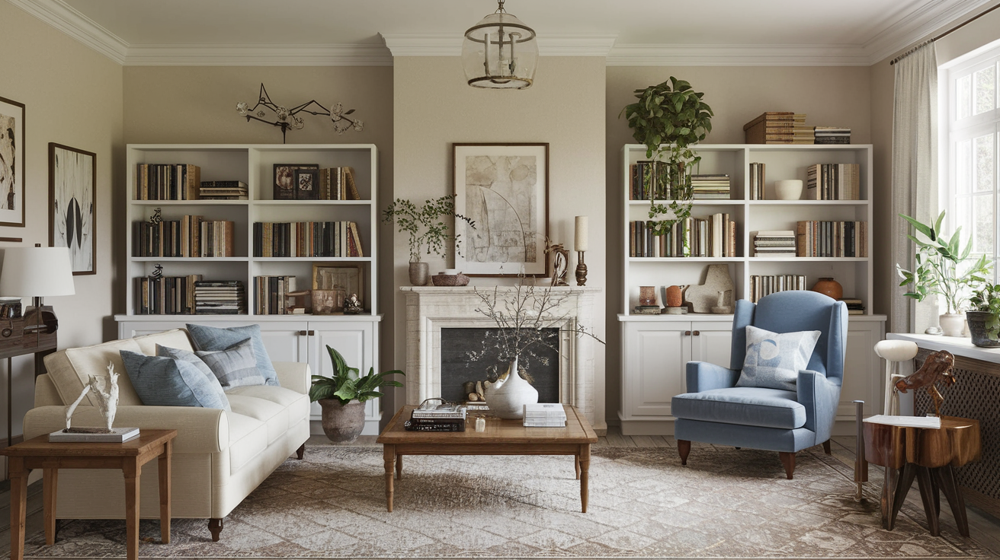
1. Greenery, Kept Simple
A few low-maintenance plants, olive branches, eucalyptus, a simple potted fern, bring the room's connection to the French countryside full circle.
Nothing fussy or high-maintenance fits here; the greenery should feel as effortless as everything else in the room.
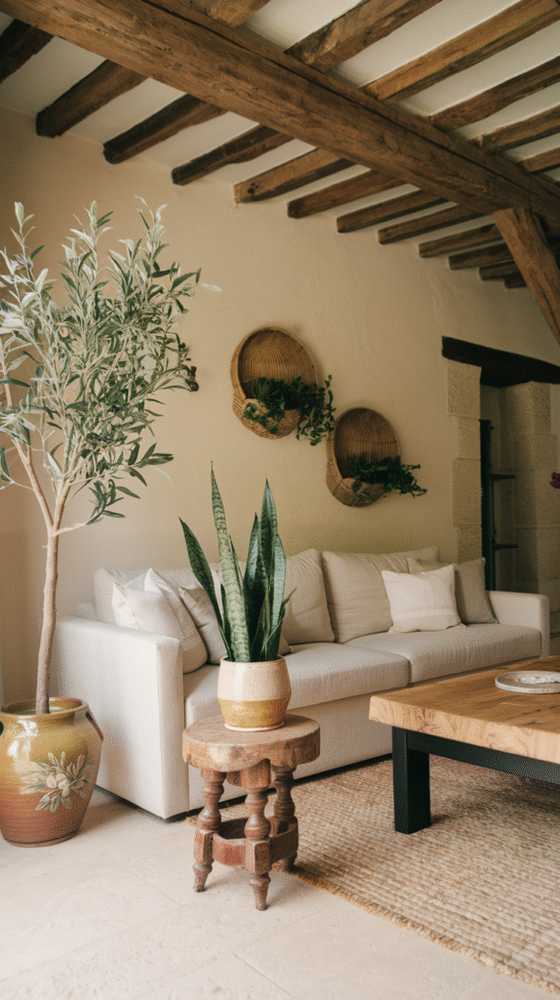
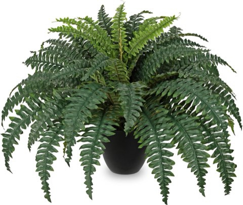
Hollyone Artificial Large Boston Fern Potted Plant, 25.5 Inch, Indoor Outdoor
Shop on Amazon2. Casual Over Curated
A room that looks slightly imperfect, a throw not perfectly folded, a book left open, fits the French farmhouse feel better than one styled to showroom precision.
This casual, lived-in quality is what keeps the elegance from tipping into something that feels untouchable.
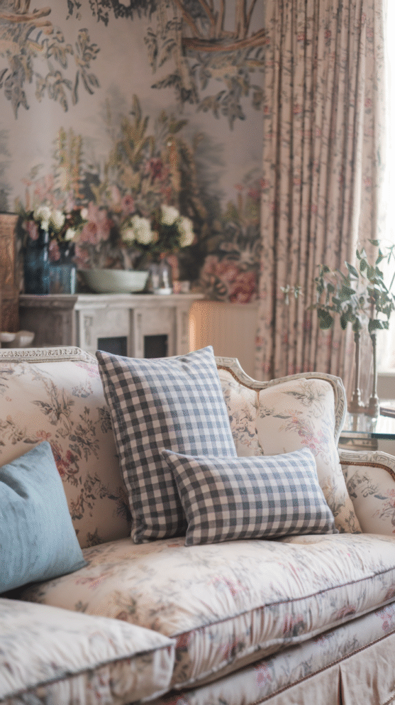
Vintage Decorative Books Set of 2 for Living Room Decor
Shop on Amazon3. Baskets and Light, Airy Curtains
Woven baskets add practical storage the same way they would in any farmhouse style, while sheer or linen curtains let in soft, filtered light rather than blocking it heavily.
The airy curtain choice specifically reinforces the room's lighter, more relaxed-elegant feel versus a heavier rustic drape.


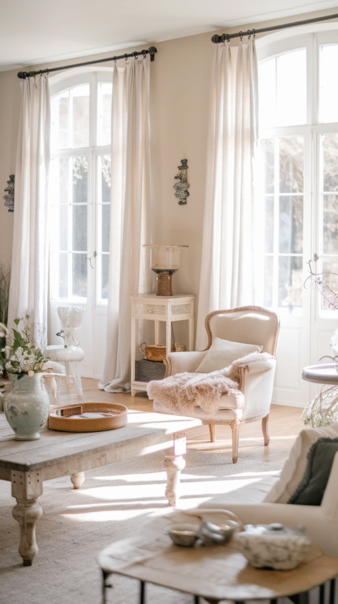

4. Wood Throughout, Softened by Texture
Warm wood tones, beams, flooring, furniture, ground the room, while linen, wool, and other natural textiles keep the wood from feeling heavy or cold.
This pairing of wood and soft natural textile is consistent across nearly every French farmhouse space, regardless of the specific pieces chosen.
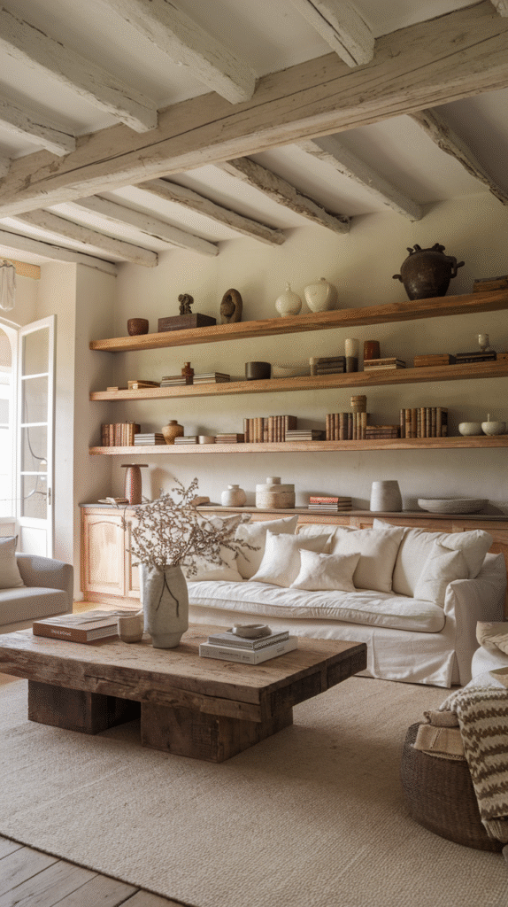
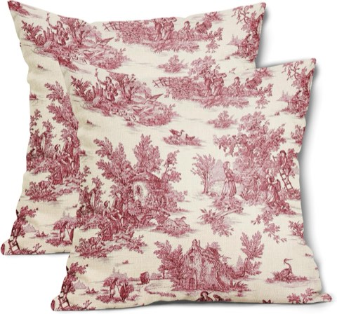
Red Toile Pillow Covers, 18 x 18 Inch, Set of 2, French Country Cotton Linen
Shop on Amazon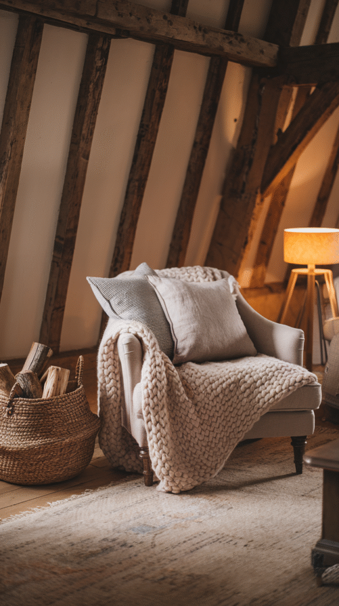
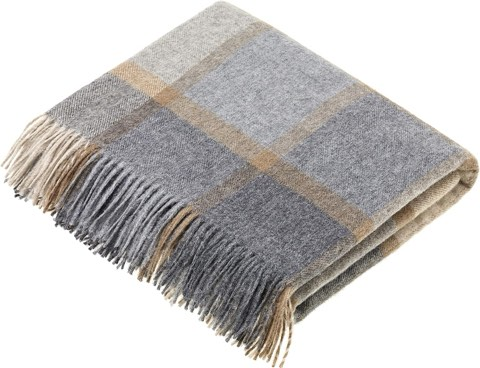
Moon Wool Plaid Throw Blanket, Merino Lambswool, Beige Grey, Made in UK
Shop on Amazon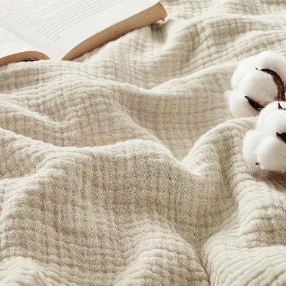
Bedsure 100% Cotton Muslin Throw Blanket for Adults, Large, Linen Beige
Shop on Amazon5. Subtle Pattern, Not Bold Pattern
A soft stripe, a faded toile, or a muted floral, patterns here stay understated, never the bold graphic prints associated with more modern farmhouse looks.
This restraint is deliberate, keeping the room feeling aged and quiet rather than trend-driven.
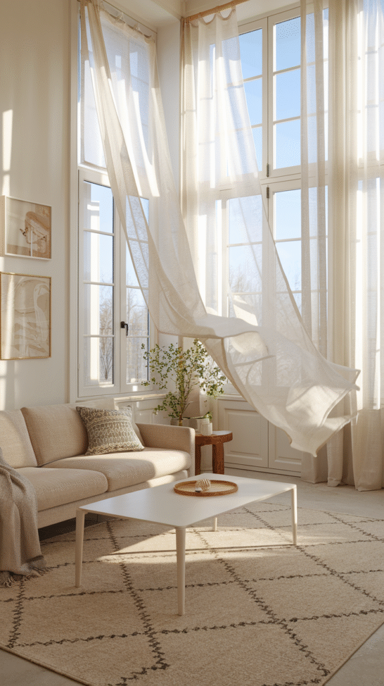
Red Toile Pillow Covers, 18 x 18 Inch, Set of 2, French Country Cotton Linen
Shop on AmazonIKATYARN Farmhouse Linen Striped Throw Pillow Cover, Retro Style
Shop on Amazon6. A Touch of Real Elegance
A chandelier, a gilded mirror frame, or an upholstered chair in a refined fabric brings in the elegance that keeps the room from reading as purely rustic.
This single element, more than any other, is what separates French farmhouse from a simpler American rustic look.
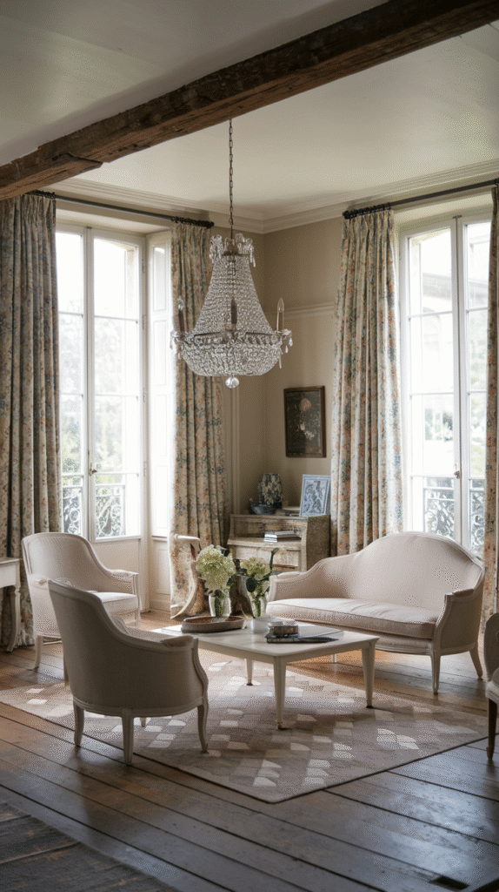
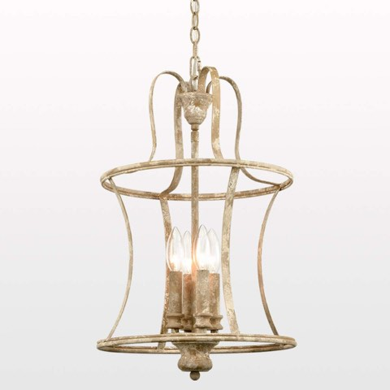
French Country 4-Light Distressed White Chandelier with Adjustable Chain
Shop on Amazon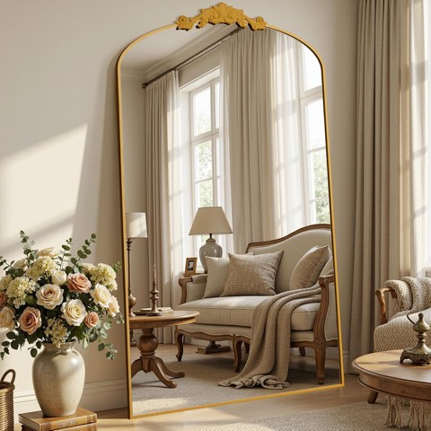
Vintage Arched Full Length Floor Mirror, 81 x 41 Inch, Carved Metal Frame
Shop on Amazon7. Antique Accessories Over Rustic Decor
This is where French farmhouse most clearly splits from its American counterpart, genuine antique accessories, ironware, aged mirrors, and porcelain, instead of rustic signs and barn-inspired decor.
Sourced pieces, collected over time from estate sales or antique shops, carry more of the look's intended character than anything bought new.
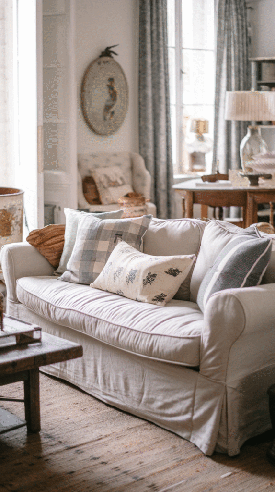
Antique Brass Cast Iron Candle Holders, Set of 2
Shop on Amazon8. Furniture With Real Age
Genuinely distressed or antique furniture, rather than new pieces styled to look worn, is central to the French farmhouse look specifically.
A single statement antique piece, an armoire, a worn wood table, does more for authenticity than several newer distressed pieces combined.
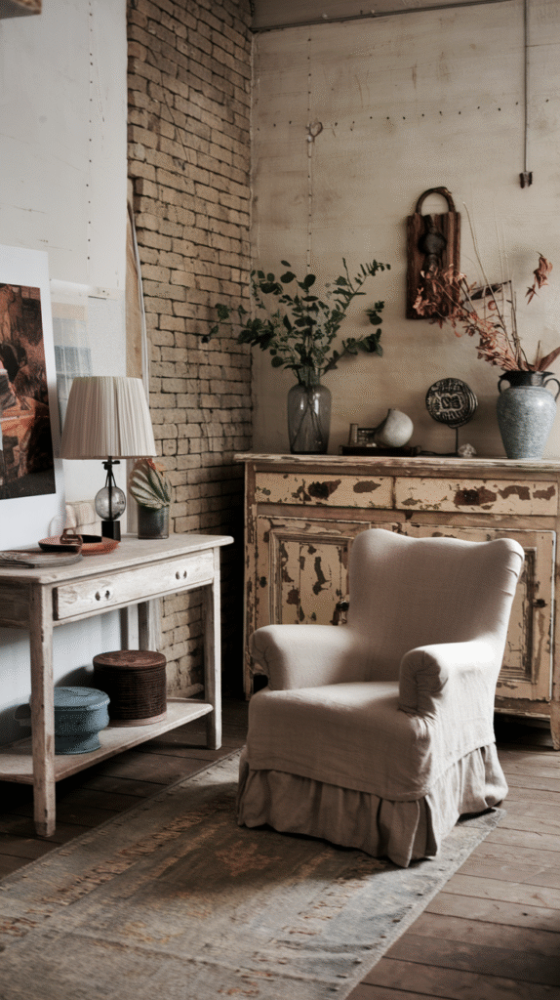
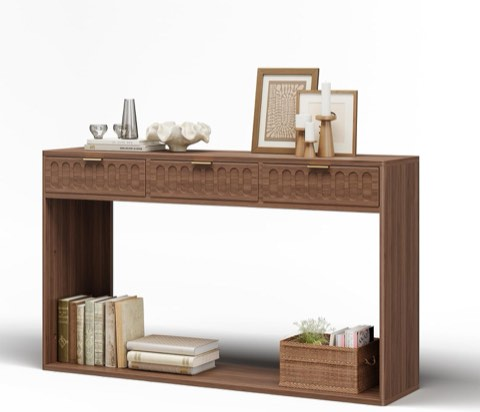
Takywep 51 Inch Farmhouse Entryway Console Table with Drawer, Rustic Narrow
Shop on Amazon9. The Shared Foundation: Neutral Base
A soft white or warm greige base works the same way it would in any farmhouse style, the canvas everything else gets layered onto.
Where French farmhouse diverges is in what gets layered on top, which the rest of this guide covers.
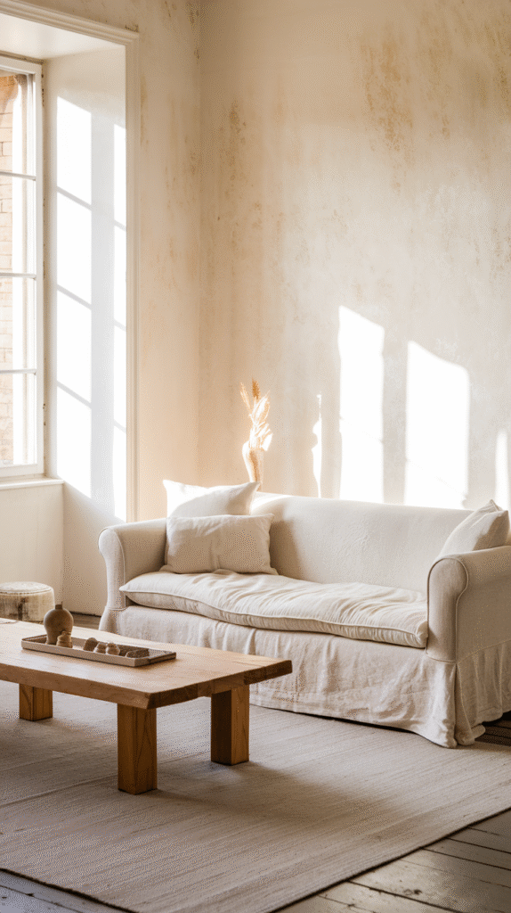
10. What Makes French Farmhouse Different
Where American farmhouse leans rustic and utilitarian, French farmhouse leans toward understated elegance, worn, but refined rather than purely rugged.
The French version borrows more from countryside estates than working barns, which shows up in the details more than the broad strokes.
Your Cozy French Farmhouse Living Room Awaits
The neutral base and wood foundation are shared ground with any farmhouse style.
What makes it distinctly French is the layer on top, antique accessories, real elegance, subtle pattern, airy curtains, chosen with restraint rather than rustic abundance.
Get that layer right, and the room reads as countryside French, not barn-inspired American.
One genuine antique piece, sourced patiently rather than bought in a hurry, will carry the whole look further than a cart full of new accessories.